End-to-end through the Mutagent framework, in any harness/framework — Mastra · LangGraph · Claude Code · Codex. Run *spec → *build → *evaluate and prove it works with a real eval set. The more ambitious and capable — real jobs, tools, integrations, triggers — the better.
*command / skill that cleanly fits Helix| 1 · | Sophistication of the agent — ambition & complexity: jobs, tools, triggers, real integrations |
| 2 · | Loop completeness — *spec → *build → *evaluate (diagnose/improve count more) |
| 3 · | Proof it works — eval criteria + a real dataset (≥20) + a scorecard |
| 🏆 | Framework extension (bonus) — does your new command/stage work + fit? |
Agent code left on the mutagent-hackathon codebase.
Orchestrator (Helix) + subagent session transcripts — required.
These are your submission — they serve as both framework feedback and proof you used the system. 😉
Grab the public hackathon repo.
$ git clone github.com/mutagent-io/ mutagent-hackathon $ cd mutagent-hackathon
Installs the agents + skills into .claude/ and .codex/.
$ bunx @mutagent/helix init # or npx / pnpx
Start your coding agent, then summon the orchestrator.
$ claude # or codex ❯ mutagent → dashboard · lifecycle · what you can do
❯ mutagent 🧬 M U T A G E N T · ADL Orchestrator — Helix routes to your subagents ────────────────────────────────────────────────────────────────────── LIFECYCLE ① SPEC → ② BUILD → ③ EVALUATE → ④ DIAGNOSE → ⑤ IMPROVE SYSTEM agentspec · skill-builder · evaluator · diagnostics SETUP ⚠ not onboarded yet — run *onboard ────────────────────────────────────────────────────────────────────── COMMANDS *spec *build *evaluate *diagnose *onboard *status Type a *command — or just say what you want.
Helix is the one orchestrator — it routes each stage to a specialized subagent. Jump in anywhere; nothing moves on without you.
| ① SPEC | *spec | describe your agent → a validated spec file |
| ② BUILD | *build | turn the spec into a working agent |
| ③ EVALUATE | *evaluate | check how good it is — pass / fail per behavior |
| ④ DIAGNOSE | *diagnose | find out why it failed — ranked fixes |
| ⑤ IMPROVE | gated | apply the fix, then re-check — until it passes |
*onboardAdd your provider keys, pick your workspace, and choose your models. Then jump into any stage.
Two ways to drive it: type a *command, or just say what you want — Helix routes it to the right stage and waits for you.
A short guided interview captures what your agent is, then writes a spec file you can build from. You answer with quick pick-lists.
❯ *spec 🧬 What agent do you want to build? ❯ A Mastra agent that triages our support inbox and drafts replies for approval. 🧬 ⟨pick-lists⟩ what kind? · how should it talk to your tools? ❯ ⟨taps options⟩ 🧬 wrote your spec ✓ — next: *build (I won't move on without you)
Describe it → answer a few forks → get a validated spec. Edit the spec later and re-build; changes flow one way (spec → agent).
A second pass confirms the build is faithful to your spec — every capability you asked for is actually there — before you move on. No silent gaps.
Looks at your agent's runs and suggests what's worth testing.
Scores your agent's runs → a clear pass / fail per behavior.
Built-in judge (no setup) · or a test-suite that runs in your own CI.
Build the checks yourself, guided, based on your spec.
Turn a few examples into a realistic set of test cases.
Takes the failures from evaluate and works out the root cause: what broke, where in the code, and a ranked list of fixes (★ = the one it recommends).
The EDD loop is the lifecycle's tight inner cycle — build → evaluate → diagnose → improve → back to build — running until the eval gate passes.

Hands the recommended fix to an AI engineer that edits your agent, then re-runs evaluate. It loops — fix → re-build → re-evaluate — until the agent passes. Nothing changes without your go-ahead.